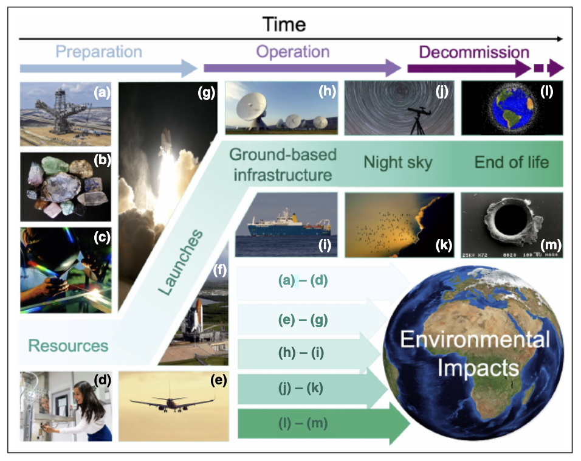

Satellite Wi-Fi, which is led by systems like Starlink, has significantly developed and expanded to help connect millions of individuals worldwide. While it brings real benefits – especially for people who live in remote areas that traditional Wi-Fi cannot reach, it also carries some major risks that are not always visible to everyday users. This assessment critically examines four main risk areas, including: cybersecurity, privacy, environmental impact and social equity, using peer-reviewed research to explore how significant these risks are.
Cybersecurity Risks
Firstly, one of the major risks is that Satellite Wi-Fi systems face a serious and growing range of cybersecurity threats. Tedeschi et al. (2022) explain that while satellite networks use data protection methods like encryption and authentication systems as data travels between different users, satellites, and ground stations, the open nature of its signals makes them fundamentally harder to secure compared to traditional internet compared to using underground cables. Attackers can take advantage of these weaknesses in encryption algorithms, outdated software, or gaps in authentication to intercept or disrupt communications.
There were two real-world attacks which have already demonstrated how serious this is. Kang et al. (2024) highlight two major examples – the AcidRain and AcidPour malware attacks. During the Russia-Ukraine war, these attacks targeted Ukraine’s satellite broadband service, causing serious damage: wiping data from thousands of modems across Ukraine and Europe, and even disrupting the remote operation of wind turbines. This illustrates that satellite systems are heavily connected to critical infrastructure, meaning a successful cyberattack can cause damage far beyond a simple loss of internet service.
Privacy Risks
Another risk alongside cybersecurity from using Satellite Wi-Fi is user privacy. Because satellite signals travel long distances via open space rather than working as our traditional Wi-Fi which use buried cables, they are more exposed to interception. Tedeschi et al. (2022) point out that satellite communications have a long history of being vulnerable to eavesdropping and spoofing attacks.
Kang et al. (2024) also state in their research that when many people rely on a single satellite provider, the risk becomes concentrated in one place. With one private company holding majority control over global communications, this raises difficult questions like who will have access to that data, how it will be stored, and what happens if this data is handed over under political or legal pressure. The more people depend on one network, the greater the damage if a privacy breach or use for illegal purposes.
Environmental Risks
People usually ignore the environmental impact of satellite Wi-Fi in public discussions. However, Gaston et al. (2023) examine the full life cycle of a satellite (Figure 1) in their research, from the manufacturing stage through the end of its life cycle, to identify some serious environmental concerns at every stage. It is stated that to build satellites, it requires various materials such as aluminium, titanium, lithium, and some other rare earth elements, many of which cause major environmental damage during their extraction process. For example, Lithium which is mined in the Andean Highlands, is known to harm the local ecosystem of this area and negatively impact other communities who live nearby.
Not only is this harmful to the ground environment, but also to the light pollution once satellites are in orbit. Gaston et al. (2023) explain that satellites reflect sunlight at night, which increases the brightness of the sky at night. As a result, this can disrupt animals and insects that rely on stars for both orientation and navigation. On the other hand, the loss of a natural night sky also has a serious impact on Indigenous communities around the world since the night sky carries deep cultural significance, patterns in the stars have historically guided agriculture, storytelling, arts, and navigation. This is a consequence that is rarely acknowledged.
Most importantly, the rapid accumulation of satellites in orbit is making space debris a serious problem. Gaston et al. (2023) warn in their research that the more satellites are launched, the risk of collision increases. Debris from those collisions then creates even more debris, triggering a chain reaction known as Kessler Syndrome. If this process is not managed carefully, large sections of Earth's orbit could become too dangerous to use, threatening future space missions and communication systems.

Digital Divide and Affordability Risks
One of the most overlooked risks is that satellite Wi-Fi may not actually solve the digital divide it promises to close. Hu (2024) demonstrates that nearly 30% of the global population who already covered by broadband networks still find it difficult to get online. This is caused by multiple factors – not only technical, but also economic, social, including cost, lack of devices, and limited digital skills.
Additionally, hardware costs like a special dish to install Satellite Wi-Fi also remain a barrier for users. This hardware dish alone can cost hundred dollars, making it difficult for individuals in poor and developing countries to afford. Beyond cost, Hu (2024) also points out a performance gap, where the satellite internet connection’s quality varies from region to region, depending on where people live. In Canada's remote northern territories, for instance, latency has been recorded as high as 600 milliseconds — far worse than what urban users experience.
Finally, Hu (2024) highlights a management gap. Remote communities typically lack the local ground infrastructure and technical expertise needed to maintain satellite services properly over time. Without that support, long-term reliability is difficult to guarantee, and communities can be left worse off if the service breaks down with no way to fix it locally.